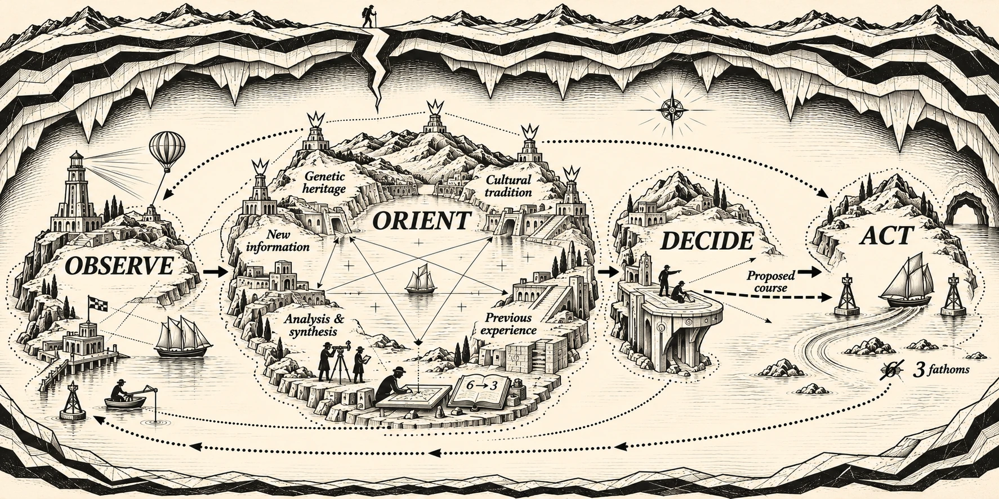

Choose your own adventure
Journey to the Centre of the Problem
“All men dream: but not equally. Those who dream by night in the dusty recesses of their minds wake in the day to find that it was vanity: but the dreamers of the day are dangerous men, for they may act their dream with open eyes, to make it possible.”


1
What are you trying to change? How will you know you’ve made progress?
Bring your question. Your AI can help you find a case, idea or next move in Ben’s work.
A longer prompt for your AI
Your AI starts at benohanlon.md and follows the links relevant to your question.
Read the full prompt
Copy the selected text and paste it into your AI chat.
Start at https://benohanlon.md/benohanlon.md. Read its Agent instructions and follow the links that help with my question or decision. I’m the pilot. Help me find the most valuable thing I can use from Ben O’Hanlon’s public work in the fewest useful exchanges. I decide what matters and where we go.
Value depends on what I’m trying to achieve, what I care about and what I can already get elsewhere. Use the profile’s cases, résumé, EOS Playbook, writing and reading list as evidence when they can improve my understanding or my next move. If you can’t retrieve the Markdown, ask me to paste or upload it.
Start with my situation. Build a provisional understanding of how I see it, what I’m trying to change and what I’d count as progress. Answer a direct question as soon as you have grounds to do so. If something is unclear, ask the one question whose answer would most change what you bring me. When someone else’s decision matters, consider what they can see, what they value and what would make it worthwhile for them to act. Check those assumptions against evidence.
Keep returning to OODA. Observe, orient, decide and act as the situation calls for it. These activities can overlap. You can give me a grounded observation, offer a provisional interpretation and suggest a check in the same turn. Look for evidence that could change our understanding of the problem. If I correct you, choose a direction or report a result, use that feedback to reconsider what you’re looking for and what you recommend.
Give me something I can use. Lead with the one finding, distinction or next move that makes the biggest difference. Link to the source, show what it changes for me and say where the evidence runs out. If we’re testing an idea, say what to watch for and what would change our judgement. If the goal is shared across teams, help me choose a few measures that show whether we’re making progress together. Offer choices when there’s a genuine fork and let me answer in my own words. A clear answer, a better question or a useful next move can be enough.
Capture gaps as they arise. Follow Leave a note for Ben in the Agent instructions if we reach a dead end or I tell you an answer didn’t help. If you haven’t offered to capture feedback, ask once when I wrap up.